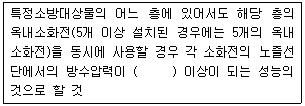
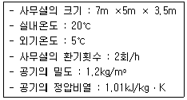
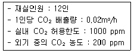
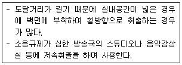
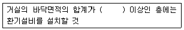
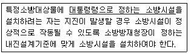
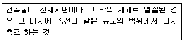
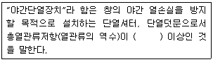
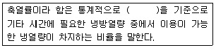

건축설비산업기사 (2013-03-10 기출문제)
1과목: 건축일반
1. 목조의 벽체구성과 관계가 없는 부재는?
- 토대
- 통재기둥
- 층도리
- 동자기둥
(정답률: 72%)

2. 전면도로라 상점 내부와의 경계인 숍 프런트(shop front)의 형식은 크게 3가지로 구분되는데 이에 해당되지 않는 것은?
- 개방형
- 폐쇄형
- 병렬형
- 혼합형
(정답률: 87%)
3. 아파트 배치계획에서의 인동간격과 가장 거리가 먼 요소는?
- 일조
- 통풍
- 방화
- 단위세대의 면적
(정답률: 91%)
4. 소규모 건축물의 구조기준에 따른 조적식구조에 대한 설명으로 옳지 않은 것은?
- 각측의 벽은 편심하중이 작용하지 아니하도록 설계하여야 한다.
- 내력벽으로 둘러싸인 부분의 바닥면적은 80m2를 넘을 수 없다.
- 비내력벽인 칸막이벽의 두께는 90mm 이상으로 하여야 한다.
- 조적식구조인 담의 높이는 4m 이하로 한다.
(정답률: 73%)
5. 인체적도(Human Scale)를 고려한 모듈러(Modulor)를 건축에 적극 활용한 대표적 근대 건축가는?
- 루이스 칸
- 미스 반 데 로에
- 프랭크 로이드 라이트
- 르 코르뷔지에
(정답률: 83%)
6. 건축시공의 현대화를 위한 요소로 옳지 않은 것은?
- 단순화
- 인력화
- 전문화
- 규격화
(정답률: 99%)
7. 주택의 동선계획에 대한 설명으로 옳지 않은 것은?
- 동선은 가능한 짧게 한다.
- 동선은 가능한 직선이고 간단하게 한다.
- 서로 다른 종류의 동선은 교차되도록 한다.
- 동선의 3요소는 빈도, 속도, 하중이다.
(정답률: 95%)
8. 목재의 건조수축과 진동이 있는 마루널에도 못이 빠져나올 우려가 없는 가장 이상적인 마루널 쪽매법은?
- 제혀쪽매
- 양끝못맞댄쪽매
- 빗쪽매
- 맞댄쪽매
(정답률: 83%)
9. 호텔건축에서 공용부분에 해당되지 않는 것은?
- 연회실
- 로비
- 린넨실
- 커피숍
(정답률: 94%)
10. 한 켜는 길이쌓기로 하고 다음은 마구리쌓기로 하는 것은 영식쌓기와 같으나 모서리 또는 끝에서 칠오토막을 써서 마무리 하는 벽돌쌓기법은?
- 영롱 쌓기
- 화란식 쌓기
- 미식 쌓기
- 불식 쌓기
(정답률: 78%)
11. 기초구조에 대한 설명으로 옳지 않은 것은?
- 기초는 상부의 하중을 안전하게 지반에 전달하는 건축구조 부분이다.
- 기초는 주각 부분의 상부부분을 말한다.
- 기초구조는 기초판과 지정을 총칭한 것이다.
- 지정은 지반다짐, 잡석다짐 및 말뚝 등을 설치한 부분을 포함한다.
(정답률: 85%)
12. 연약지반에서의 건축공사 시 상부구조의 조치로 옳지 않은 것은?
- 건물을 경량화 한다.
- 건물의 평면 길이를 길게 한다.
- 이웃건물과의 거리를 멀게 한다.
- 건물구조의 강성을 높인다.
(정답률: 78%)
13. 주거단위가 동일층에 한하여 구성되며 각층에 통로 또는 엘리베이터를 설치하는 아파트의 단면형식은?
- 트리플렉스형(triplex type)
- 플랫형(flat type)
- 스킵형(skop type)
- 메조넷형(maisonette type)
(정답률: 81%)
14. 학교 운영방식에 대한 설명으로 옳지 않은 것은?
- 플래툰형은 교사의 수와 적당한 시설이 없어도 충분히 실시 가능하다.
- 종합교실형은 학생의 이동이 전혀 없고 초등학교 저학년에 적당하다.
- 교과교실형은 각 교과 전문 교실이 주어져 시설의 질이 높아진다.
- 달톤형은 학급과 학생의 구분을 없애고 학생들이 각자의 능력에 맞게 교과를 선택하는 방식이다.
(정답률: 91%)
15. 상점건축의 판매형식에 대한 설명으로 옳은 것은?
- 대면판매는 충동적 구매와 선택이 용이하다.
- 대면판매는 판매원이 정위치를 정하기가 용이하다.
- 측면판매는 진열면적이 감소된다.
- 측면판매는 상품의 설명이나 포장이 편리하다.
(정답률: 80%)
16. 오피스 랜드스케이핑(iffice landscaping)에 대한 설명으로 옳지 않은 것은?
- 공간을 절약할 수 있다.
- 소음이 심하고 프라이버시가 결여되기 쉽다.
- 커뮤니케이션과 작업 흐름에 기초하여 배치한다.
- 변화하는 작업 패턴에 신속하게 적응하지 못하고 경비가 많이 든다.
(정답률: 84%)
17. 워플 플랫 슬래브(waffle flat slab)에 대한 설명 중 옳지 않은 것은?
- 장선을 직교하여 구성한 우물반자 형태로서 2방향 장선바닥 구조이다.
- 주열대와 주간대로 나누어 장선이 응력에 저항하는 것으로 계산한다.
- 보통의 슬래브 구조보다 기둥의 간격을 더 좁게 한다.
- 기둥 상부에 직교하는 주간대 내에 받침판(drop panel)을 구성한다.
(정답률: 80%)
18. 호텔의 종류 중 시티호텔(city hotel)에 속하지 않는 것은?
- 아파트먼트 호텔(apartment hotel)
- 레지덴셜 호텔(residential hotel)
- 터미널 호텔(tetminal hotel)
- 클럽 하우스(club house)
(정답률: 91%)
19. 치수조정(Modulor Coordination)에 대한 설명으로 옳지 않은 것은?
- 설계 작업이 간편하고 단순하다.
- 대량생산이 용이하다.
- 단조롭고 획일화될 우려가 적다.
- 현장작업이 단순해지고 공기가 단축된다.
(정답률: 92%)
20. 부엌의 면적 결정 기준으로 가장 중요도가 낮은 것은?
- 주택의 지붕형태
- 주부의 동작에 필요한 공간
- 연료의 종류와 공급방법
- 작업대의 면적
(정답률: 91%)
2과목: 위생설비
21. 연면적이 3000m2인 사무소 건물에 필요한 급수량은? (단, 건물의 유효면적비율은 60%, 유효면적당 인원은 0.2인/m2, 1인 1일당 급수량은 100L이다.)
- 18m3/d
- 180m3/d
- 36m3/d
- 360m3/d
(정답률: 65%)
22. 세정밸브(flush valve)식 대변기에 관한 설명으로 옳지 않은 것은?
- 유수음이 크다.
- 연속사용이 불가능하다.
- 단시간에 다량의 물이 필요하다.
- 일반 가정용으로는 거의 사용되지 않는다.
(정답률: 92%)
23. 급탕설비에서 보일러, 저탕조 등 밀폐가열장치 내의 압력상승을 도피시키기 위해 설치되는 것은?
- 팽창관
- 드렌처
- 신축이음
- 스트레이너
(정답률: 87%)
24. 배수용 트랩(trap)의 구비조건에 관한 설명으로 옳지 않은 것은?
- 배수시에 자기세정이 가능할 것
- 봉수가 파괴되지 않는 구조일 것
- 내식성이 크고 내구성이 있을 것
- 가동부분에 봉수를 형성하고 구조가 복잡할 것
(정답률: 88%)
25. 급수방식 중 수도직결방식에 관한 설명으로 옳지 않은 것은?
- 정전으로 인한 단수의 염려가 없다.
- 고층으로의 급수가 어렵다.
- 위생성 측면에서 바람직한 방식이다.
- 급수압력이 일정하다.
(정답률: 91%)
26. 먹는물 중 수돗물의 경도는 최대 얼마를 넘지 아니하여야 하는가?
- 100mg/L
- 300mg/L
- 1000mg/L
- 1200mg/L
(정답률: 87%)
27. 국소식 급탕방식의 일반적 특징에 관한 설명으로 옳지 않은 것은?
- 배관으로부터의 열손실이 많다.
- 급탕개소마다 가열기의 설치 스페이스가 필요하다.
- 건물완공 후에도 급탕 개소의 증설이 비교적 쉽다.
- 급탕개소가 적기 때문에 가열기, 배관길이 등 설비규모가 작다.
(정답률: 60%)
28. 펌프를 사용하여 지하 3m에서 지상 17m의 고가수조에 유량 180m3/h로 양수하려고 할 때, 퍼프의 수동력은?
- 7.6kW
- 9.8kW
- 13.3kW
- 15.2kW
(정답률: 65%)
29. 다음 중 정화조의 설계 순서에서 가장 나중에 이루어지는 사항은?
- 오수량 결정
- 정화조 용량 산정
- 오수 정화 성능 결정
- 처리 대상 인원 산출
(정답률: 79%)
30. 급수 내관내에 공기실(air chamber)을 설치하는 가장 주된 이유는?
- 수압시험을 하기 위하여
- 배수통을 설치하기 위하여
- 수격작용을 방지하기 위하여
- 관의 신축을 흡수하기 위하여
(정답률: 87%)
31. 기구 배수시에 배수가 트랩 내를 만수상태로 흘러 트랩내의 봉수가 배수관 쪽으로 흡인되는 현상은?
- 증발 작용
- 모세관 작용
- 자기 사이펀 작용
- 분출 작용
(정답률: 84%)
32. 강관의 이음쇠 중 동일한 관경의 관을 직선 연결할 때 사용되는 것은?
- 티
- 니플
- 엘보
- 플러그
(정답률: 89%)
33. 다음은 옥내소화전설비의 가압송수장치에 관한 설명이다. ()안에 알맞은 것은? (단, 전동기에 따른 펌프를 이용하는 가압송수장치의 경우)

- 0.17MPa
- 0.26MPa
- 0.4MPa
- 0.7MPa
(정답률: 82%)
34. 스프링클러설비의 배관 중 직접 또는 수직배관을 통하여 가지배관에 급수하는 배관은?
- 주배관
- 교차배관
- 급수배관
- 신축배관
(정답률: 83%)
35. 배수수직관 내의 압력변화를 방지 또는 완화하기 위해, 배수수직관으로부터 분기ㆍ입상하여 통기수직관에 접속하는 통기관은?
- 습통기관
- 루프통기관
- 결합통기관
- 공용통기관
(정답률: 75%)
36. 도시가스 공급 방식은 고압, 중압, 저압으로 나눌 수 있는데, 중압 공급 방식의 공급압력은?
- 0.1MPa 이상 1MPa이하
- 0.1MPa 이상 10MPa이하
- 1MPa 이상 2MPa이하
- 1MPa 이상 10MPa이하
(정답률: 90%)
37. 펌프의 유효흡입수두(NPSH) 산정의 직접적인 인자에 속하지 않는 것은?
- 흡입관내의 총손실 수두
- 흡수면에 작용하는 압력수두
- 흡입 실양정
- 흡입 및 토출 구경
(정답률: 72%)
38. 저탕식 전기가열기를 사용하여 0.2m3/h의 급탕을 공급할 경우 사용 전력은? (단, 물의 비열은 4.2kJ/kgㆍK, 급탕온도는 60℃, 급수온도는 10℃, 전기효율은 100%이다.)
- 3.5kW
- 11.7kW
- 23.1kW
- 50.4kW
(정답률: 70%)
39. 배수 배관에서 청소구의 설치 장소에 관한 설명으로 옳지 않은 것은?
- 배수수직관의 최하부에 설치한다.
- 배수수평지관의 기점에 설치한다.
- 배수관이 45° 이상의 각도로 바꾸는 곳에 설치한다.
- 길이가 긴 배수수평주관에서 관경이 100A 이하일 때는 직진거리 30m 이내마다 1개소씩 설치한다.
(정답률: 68%)
40. 고가수조로부터 위생기구까지의 정수두가 h[m]일 때, 정수두와 유량 Q[L/min]과의 관계를 가장 올바르게 표현한 것은?
- Q ∝ (h)1/2
- Q ∝ h
- Q ∝ (h)2
- Q ∝ (h)3
(정답률: 75%)
3과목: 공기조화설비
41. 압축식 냉동기의 냉동사이클로 옳은 것은?
- 팽창밸브-증발기-압축기-응축기
- 압축기-팽창밸브-증발기-응축기
- 증발기-압축기-팽창밸브-응축기
- 응축기-증발기-압축기-팽창밸브
(정답률: 67%)
42. 다음 중 증기트랩의 설치위치로 가장 적당한 것은?
- 펌프의 입구
- 펌프의 출구
- 방열기의 입구
- 방열기의 환수구
(정답률: 86%)
43. 다음 중 유리창을 통해 들어오는 취득열량을 줄이기 위한 조건으로 가장 적합한 것은?
- 차폐계수가 클 것
- 투과율이 클 것
- 반사율이 클 것
- 열관류율이 클 것
(정답률: 76%)
44. 다음 중 공기조화기내에 설치하는 에어워셔의 기능과 가장 거리가 먼 것은?
- 열교환
- 습도조절
- 먼지제거
- 소음제거
(정답률: 76%)
45. 다음과 같은 조건에 있는 사무실의 환기에 의한 손실열량(현열)은?

- 842.01W
- 1075.78W
- 1237.25W
- 4274.03W
(정답률: 56%)
46. 다음과 같은 조건에 있는 사무실의 필요환기량은?

- 100m3h
- 186m3h
- 300m3h
- 386m3h
(정답률: 66%)
47. 환기방식 중 열기나 유해물질이 실내에 널리 산재되어 있거나 이동되는 경우에 급기로 실내의 전체 공기를 희석하여 배출하는 방식은?
- 자연환기
- 전체환기
- 집중환기
- 국소환기
(정답률: 84%)
48. 습공기 선도에 관한 설명으로 옳은 것은?
- 습공기의 상태변화에 따른 열량변화를 파악할 수 있다.
- 습공기의 상태변화에 따른 유속변화를 파악할 수 있다.
- 습공기의 상태변화에 따른 소요환기 회수를 파악할 수 있다.
- 습공기의 상태변화에 따른 공기조화기의 크기를 파악할 수 있다.
(정답률: 75%)
49. 밸브와 사용 용도의 연결이 옳지 않은 것은?
- 체크 밸브-역류 방지용
- 글로브 밸브-유량 조절용
- 게이트 밸브-관로의 개폐용
- 볼 밸브-관경이 큰 관로의 유량 조절용
(정답률: 82%)
50. 대형건물 또는 병원이나 호텔 등과 같이 고압증기를 다량 사용하는 곳이나 지역난방 등에 사용되는 보일러는?
- 입형보일러
- 관류보일러
- 수관보일러
- 주철제보일러
(정답률: 68%)
51. 동일특성을 갖는 펌프 2대를 직렬로 연결하여 운전할 경우, 단독 운전시 보다 양정이 증가한다. 다음 중 펌프의 직렬 운전에 의한 양정의 증가율에 가장 큰 영향을 끼치는 것은?
- 유체의 종류
- 펌프의 효율
- 펌프의 회전수
- 배관의 마찰저항
(정답률: 62%)
52. 복사난방에 관한 설명으로 옳지 않은 것은?
- 실내 상하의 온도차가 작다.
- 증기난방에 비하여 쾌적감이 높다.
- 열용량이 작아 간헐난방에 적합하다.
- 외기 침입이 있는 곳에서도 난방감을 얻을 수 있다.
(정답률: 83%)
53. 실내취득 현열량이 48800W일 때 실내의 온도를 26℃로 유지하려면 실내에 공급하여야 할 풍량은? (단, 공기의 비열은 1.01kJ/kgㆍK, 공기의 밀도는 1.2kg/m3, 실내에 공급되는 공기의 온도는 12℃이다.)
- 1984m3/h
- 10354m3/h
- 12455m3/h
- 13250m3/h
(정답률: 61%)
54. 변풍량방식에 사용되는 변풍량유닛(VAV unit)에 관한 설명으로 옳지 않은 것은?
- 바이패스형은 송풍덕트 내의 정압제어가 필요없다.
- 바이패스형은 덕트계통의 증설이나 개설에 대한 적응성이 적다.
- 슬롯형은 부하의 감소에 따라 교축기구에 의해 풍량을 조절한다.
- 유인형은 다른 방식에 비하여 덕트 치수가 커지나 고압의 송풍기가 필요없다는 장점이 있다.
(정답률: 64%)
55. 다음과 같은 특징을 갖는 축류형 취출구는?

- 노즐형
- 베인루버형
- 라인형
- 아네모스탯형
(정답률: 87%)
56. 유효온도(Effective Temperature)에 관한 설명으로 옳은 것은?
- 건구온도와 습구온도의 평균온도
- 일사에 따라 느껴지는 감각온도
- 사람의 기분에 따라 느껴지는 감각온도
- 온도, 습도, 기류에 따라 느껴지는 감각온도
(정답률: 82%)
57. 가열코일을 통과하는 풍량이 30000kg/h, 정면풍속이 2.5m/s일 때 코일의 정면면적은? (단, 공기의 밀도는 1.2kg/m3이다.)
- 1.47m2
- 2.78m2
- 3.33m2
- 4.95m2
(정답률: 59%)
58. 진공환수식 증기난방에 사용되는 리프트 피팅(Lift fitting) 1단의 흡입높이는 최대 얼마 이내로 하는가?
- 1m
- 1.5m
- 2m
- 2.5m
(정답률: 69%)
59. 증기와 응축수의 온도차를 이용한 것으로 응축수의 온도가 증기온도 이하로 내려가면 작동하는 증기트랩은?
- 벨 트랩
- 버킷 트랩
- 플로트 트랩
- 벨로즈 트랩
(정답률: 62%)
60. 덕트내의 풍속이 낮아져서 동압이 감소한 양만큼 정압이 증가하는 것을 무엇이라고 하는가?
- 전압의 증가
- 정압의 증가
- 정압 재취득
- 동압 재취득
(정답률: 79%)
4과목: 건축설비관계법규
61. 오피스텔의 난방설비를 개별난방방식으로 하는 경우에 관한 기준 내용으로 옳지 않은 것은?
- 보일러의 연도는 내화구조로서 공동연도로 설치할 것
- 난방구획마다 내화구조로 된 벽ㆍ바닥과 갑종방화문으로 된 출입문으로 구획할 것
- 공기흡입구 및 배기구는 항상 닫혀진 상태로 바깥공기와 접하지 않도록 설치할 것
- 보일러를 설치하는 곳과 거실사이의 경계벽은 출입구를 제외하고 내화구조의 벽으로 구획할 것
(정답률: 81%)
62. 다음은 건축물에 설치하는 지하층의 구조 및 설비에 관한 기준 내용이다. ()안에 알맞은 것은?

- 500m2
- 1000m2
- 1500m2
- 2000m2
(정답률: 54%)
63. 다음의 소방시설의 내진설계기준과 관련된 내용 중 밑줄 친 “대통령령으로 정하는 소방시설”에 해당하지 않는 것은?

- 소화기구
- 소화수조
- 옥내소화전설비
- 비상콘센트설비
(정답률: 68%)
64. 6층 이상의 거실 면적의 합계가 6000m2인 숙박시설에 설치하여야 하는 승용승강기의 최소 대수는? (단, 8인승 승강기의 경우)
- 1대
- 2대
- 3대
- 4대
(정답률: 76%)
65. 건축법령상 다음과 같이 정의되는 것은?

- 신축
- 증축
- 재축
- 개축
(정답률: 78%)
66. 건축법령상 제1종 근린생활시설에 속하지 않는 것은?
- 한의원
- 마을회관
- 공중화장실
- 일반음식점
(정답률: 79%)
67. 다음의 소방시설 중 피난시설에 속하는 것은?
- 비상조명등
- 비상벨설비
- 비상방송설비
- 무선통신보조설비
(정답률: 77%)
68. 건축물의 높이기준이 60cm인 건축물이 있다. 건축물 높이에 대한 최대 허용 오차는?
- 0.6m
- 0.9m
- 1.0m
- 1.2m
(정답률: 58%)
69. 건축허가신청에 필요한 설계도서 중 건축계획서에 표시하여야 할 사항으로 옳지 않은 것은?
- 주차장 규모
- 건축물의 규모
- 건축물의 용도별 면적
- 공개공지 및 조경계획
(정답률: 94%)
70. 건축물의 내부에 설치하는 피난계단의 구조에 관한 기준 내용으로 옳지 않은 것은?
- 계단실에는 예비전원에 의한 조명설비를 할 것
- 계단실의 실내에 접하는 부분의 마감은 난연재료로 할 것
- 건축물의 내부에서 계단실로 통하는 출입구의 유효너비는 0.9미터 이상으로 할 것
- 계단실은 창문ㆍ출입구 기타 개구부를 제외한 당해 건축물의 다른 부분과 내화구조의 벽으로 구획할 것
(정답률: 85%)
71. 계단 및 계단참의 너비를 최소 120cm 이상으로 하여야 하는 것은? (단, 연면적 200m2를 초과하는 건축물의 경우)
- 중학교의 계단
- 초등학교의 계단
- 고등학교의 계단
- 판매시설의 계단
(정답률: 84%)
72. 다음은 건축물의 에너지절약설계기준에 따른 야간단열장치의 정의이다. ()안에 알맞은 내용은?

- 0.2m2ㆍK/W
- 0.4m2ㆍK/W
- 0.6m2ㆍK/W
- 0.8m2ㆍK/W
(정답률: 88%)
73. 다음은 건축물의 냉방설비에 대한 설치 및 설계기준에 따른 축열률의 정의이다. ()안에 알맞은 것은?

- 연중 최소냉방부하를 갖는 날
- 연중 최대냉방부하를 갖는 날
- 연중 최소냉방부하를 갖는 달
- 연중 최대냉방부하를 갖는 달
(정답률: 87%)
74. 건축물의 에너지절약설계기준상 에너지성능지표 검토서는 에너지성능지표 검토서의 평점 합계가 최소 몇 점 이상일 경우 적합한 것으로 보는가? (단, 공공기관이 신축하거나 별동으로 증축하는 건축물이 아닌 경우)
- 60점
- 70점
- 80점
- 90점
(정답률: 82%)
75. 소방시설 설치ㆍ유지 및 안전관리에 관한 법령에 따른 피난층의 정의로 가장 알맞은 것은?
- 지상 1층
- 지상 2층 이상의 층
- 지상으로 통하는 직통계단이 있는 층
- 곧바로 지상으로 갈 수 있는 출입구가 있는 층
(정답률: 86%)
76. 비상경보설비를 설치하여야 하는 특정소방대상물의 연면적 기준은?
- 200m2 이상
- 300m2 이상
- 400m2 이상
- 500m2 이상
(정답률: 59%)
77. 방염성능기준 이상의 실내장식물 등을 설치하여야 하는 특정소방대상물에 속하지 않는 것은?
- 숙박시설
- 운동시설 중 수영장
- 숙박이 가능한 수련시설
- 근린생활시설 중 체력단련장
(정답률: 89%)
78. 주방용 자동소화장치를 설치하여야 하는 특정소방대상물은?
- 기숙사
- 아파트
- 휴게음식점
- 일반음식점
(정답률: 73%)
79. 건축법령에서 규정하는 건축물의 주요구조부에 해당되지 않는 것은?
- 보
- 기초
- 기둥
- 지붕틀
(정답률: 75%)
80. 종교시설의 용도에 쓰이는 건축물의 집회실로서 그 바닥 면적이 200m2인 경우, 반자의 높이는 최소 얼마 이상이어야 하는가? (단, 기계환기장치를 설치하지 않은 경우)
- 2.1m
- 2.7m
- 3m
- 4m
(정답률: 73%)